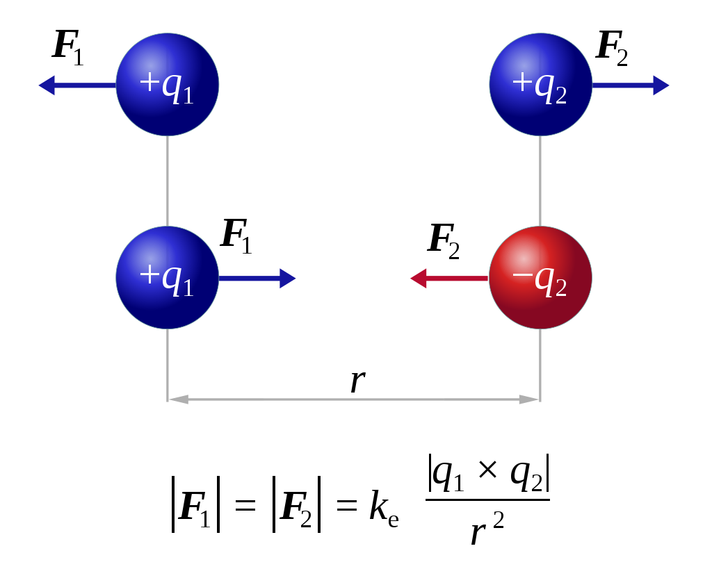
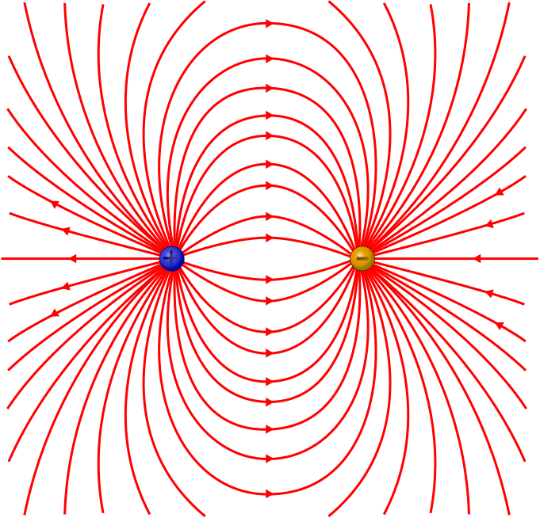
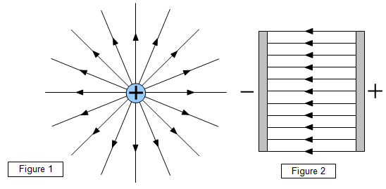

Time to get electric with a few courses about electricity! In this first course, we'll be looking at static electricity, which is electricity that doesn't move. Next up will be electrodynamics.
Above is an image of an electrometer, a device used to measure electricity. This is an old model, but it's easy to explain.
Let's say we take a ruler and we rub it with some cloth, to give it some static electricity. We then touch the electrometer (the top part) with this ruler, transferring the electricity.
There are now negative charges all across our electrometer. Since equal charges oppose eachother, the electric charges on the middle rod will oppose those on the thin indicator rod, which will make the indicator rod move, allowing us to read a value from the electrometer.
Additionally, we can break the electrometer by, instead of touching it with the static electricity, holding that ruler near the top without touching it. This will create electric influence.
Before we did anything, the electrometer contained an equal amount of positive and negative charges, making it seemingly neutral. Due to influence, those positive charges will move to the top, attempting to reach the negative charges on the ruler.
We can then touch the electrometer with our hand, while standing on the ground, to cause the negative charges to face electrical ground. This means they will travel through our body, out of the electrometer and to the ground.
Now only the positive charges remain, so we will remove the ruler, stopping the influence. The electrometer is now filled with positive charges that oppose eachother. This means the meter will permanently show a measurement, that is, until we reset it by touching it with the electrical ruler.
Let's take a quick peek at some chemistry. If a wire is made from an atom that has 1, 2, or 3 valence electrons (electrons on the outermost shell), this atom must lose electrons to reach the noble gas configuration. Since it must give its electrons away, those can move freely. These atoms are conductors.
An atom with 5, 6, or 7 valence electrons has to gain some electrons, so its electrons cannot move freely. These atoms are insulators.
Finally, an atom with 4 valence electrons is a special type, it is a semi-conductor.
To analyze one electric charge and the effects it has on another electric charge (opposing or attracting), we will introduce the coulomb.
| Name | Unit | Symbol |
|---|---|---|
| Electric Charge (Q) | Coulomb | C |
Let's derive a cool little formula to calculate the coulomb force one charge has on another. Logically, this will be proportional to the electric charge of both the charges, and their distance.$$F\approx |Q_{1}|$$$$F\approx |Q_{2}|$$$$F\approx \frac{1}{r^{2}}$$Why it is inversely proportional to the square of the distance is tied to experimental findings.$$F\approx \frac{|Q_{1}||Q_{2}|}{r^{2}}$$$$F=c⋅\frac{|Q_{1}||Q_{2}|}{r^{2}}$$This constant will have the symbol 'k', and it stands for the electric permittivity of the medium between the charges. In most cases, this will be air.
| Name | Symbol | Value |
|---|---|---|
| Electric permittivity | k | Medium-specific ((N*m²)/C²) |
$$F=k_{e}⋅\frac{|Q_{1}||Q_{2}|}{r^{2}}$$
In a vacuum, which we'll be using for our calculations, the electric permittivity is equal to 8.99*10^9 (N*m²)/C².
 By User:Dna-Dennis, CC BY 3.0, LinkThis is also referred to as Coulomb's Law. When making a diagram of a situation with electric charges, make sure the vectors' lengths depict the magnitudes of the Coulomb force. You can also calculate the total force on a charge (e.g. if there are 4 charges) using vector mathematics, the cosine rule, etc.
Now let's go back a bit. Right now we're studying two charges that are affecting eachother. But what about a random point around one charge, does it also feel something?
Yes! It feels electric field strength. Obviously, we only need to use the source charge in our equation, so:$$E=\frac{F}{Q}$$We are removing the 'test charge' from our Coulomb force equation to get the new electric field strength equation.
| Name | Unit | Symbol |
|---|---|---|
| Electric Field Strength (E) | Newton per coulomb | N/C |
I cannot stress enough that the symbol E here has nothing to do with energy!$$E=k_{e}\frac{|Q_{s}|}{r^{2}}$$
 Sharayanan, CC BY-SA 3.0, via Wikimedia CommonsWhat you see here are two charges, a positive one and a negative one, with field lines drawn around them. Logically, these lines always go from positive to negative. Field lines are lines representing the direction of the electric field strength in that point. For example, if you place a point on any of the red lines, the direction of the electric field strength in that point will follow the field lines. Here are two more situations.
 From SchoolphysicsOn the left you see a radial field, where the positive charge is opposing, so all of the field lines go away from this charge.
On the right you see a homogeneous field, where they are all going in the same direction.
Anther property of field lines is that, the closer they are, the stronger the field strength is. Finally, the electric field strength is larger at sharp edges, like on a lightning rod.
Electric Potential Energy is not a vector, but its formula comes from our previous vector formulas.$$E_{pot}=QEr$$In other words, we can calculate it like so:$$E_{pot}=k_{e}\frac{|Q_{1}||Q_{2}|}{r}$$Similar to how we had electric field strength, which was coulomb force divided by charge, we have electric potential, which is the electric potential energy divided by charge.
The electric potential, also known as the voltage, indicates the electric potential energy per unit of charge.$$V=Ex$$$$V=k_{e}\frac{Q_{s}}{r}$$There are also equipotential lines, lines where the electric potential is equal.
The blue lines here are electric field lines, while the green ones are equipotential lines. You may be able to tell that, where the lines cross, there is always a right angle (90°).
| Name | Unit | Symbol |
|---|---|---|
| Electric Potential (V) | Volt | V |
The difference between two electric potentials is also known as electric voltage.
| Name | Unit | Symbol |
|---|---|---|
| Electric Voltage (U) | Volt | V |